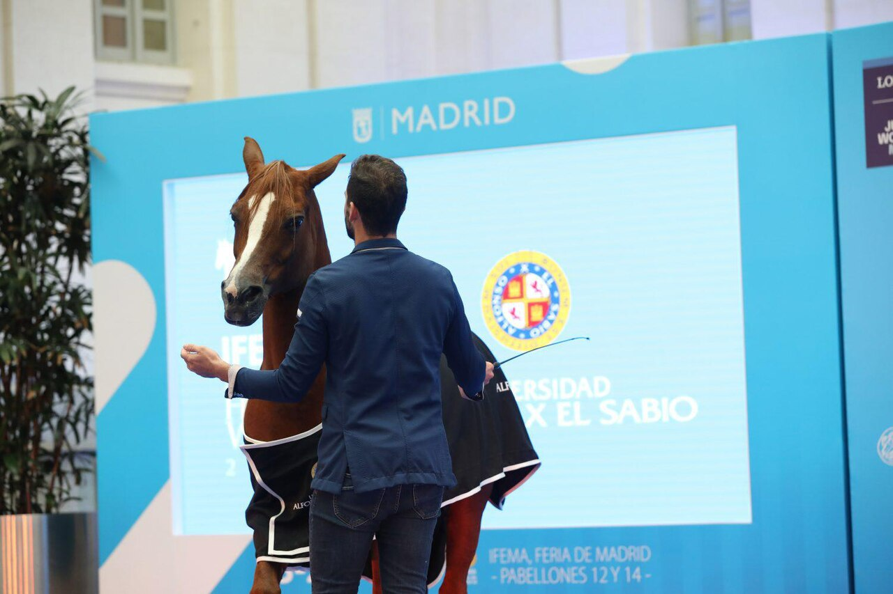

Maria Caetano y Hit Plus ganan el Gran Premio de la Copa del Mundo de Doma en Madrid
La portuguesa Maria Caetano ganó el viernes con Hit Plus el Gran Premio de la etapa madrileña de la Copa del Mundo FEI de Doma, en la Mutua Madrid Horse Week.

Caetano y su castrado de 14 años sumaron un 72,108 % y fueron primeros para cuatro de los cinco jueces; el quinto, en B, los colocó terceros. Segundo fue Claudio Castilla Ruiz con Jota Das Figueiras (70,109 %) y tercero, José Antonio García Mena con Jumeaux (69,913 %).
El cuarto puesto lo compartieron el portugués João Pedro Moreira, con Drosa Fuerst Kennedy OLD, y Lucía Gallardo, con Hip by Johnson, ambos con un 69,739 %. Beatriz Ferrer-Salat fue sexta con Elegance (69,609 %). Tomaron la salida diez binomios.
La prueba de la Copa del Mundo propiamente dicha es el Gran Premio Libre (Kür), programado el sábado a las 14:45 en la misma pista de IFEMA.
Por Lucía Valdeolmos